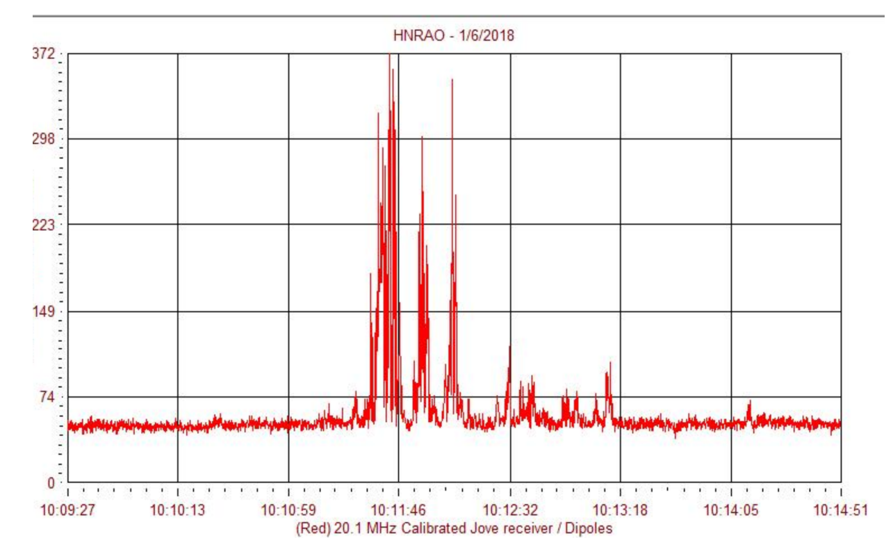

Academics
Homepage
Awards in Physics:
British Physics Olympiad Top Gold award (top 184 out of 3137 in the UK)
Gold Crest Award in Engineering for constructing a radio Jove telescope to monitor radio storms on Jupiter.
Lincoln University Physics Challenge Second place nationally
I intend to specialize in physics and later computational physics over the course of my studies at Cambridge
Learn more about Me
Academics
Coding
Personal
Below are radio waves all the way from Jupiter picked up by my telescope
